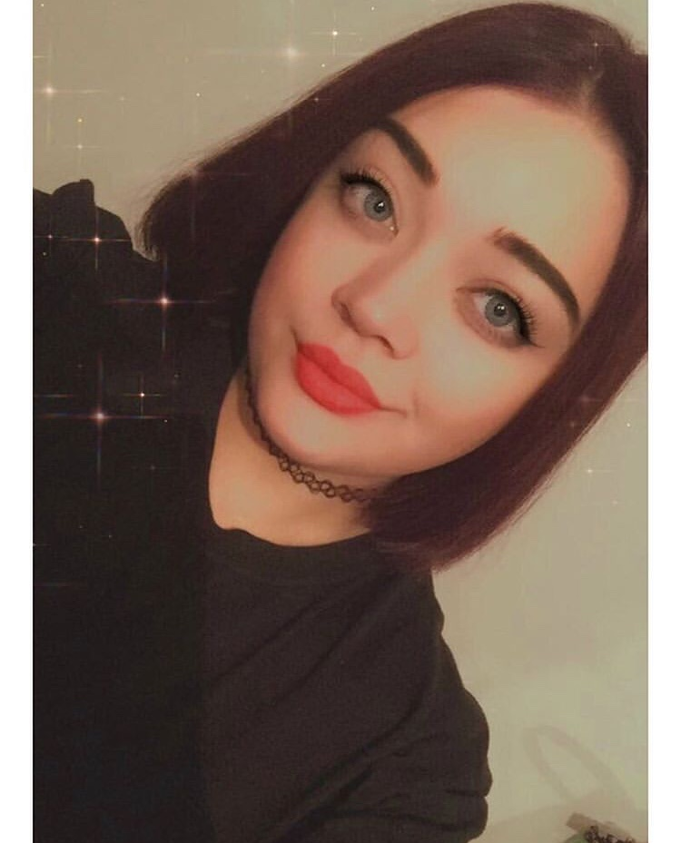

Almina Raščić
Omera Kovača Čikma 29
71000 Sarajevo
alminaarascic23@gmail.com
0038763984935
| Name of the School | Starting Year | Ending Year |
|---|---|---|
| El-Manar | 2003 | 2004 |
| Čengić Vila I | 2004 | 2012 |
| Medresa "Osman ef. Redžović" | 2012 | 2017 |
| International University of Sarajevo | 2017 | present |
My name is Almina Raščić. I was born on May 5th 1997 in Sarajevo. I’m a nice, fun and friendly person, I’m honest and punctual, I work well in a team but also on my own as I like to set myself goals which I will achieve, I have good listening and communication skills. I have a creative mind and am always up for new challenges. I am well organized and always plan ahead to make sure I manage my time well.
Undergraduate of Software Engineering -
International University of Sarajevo
Certificate of Achievement (09/2013-12/2015)
English Access Microscholarship Program
Presented for successful completion of the intensive, two-year English Access Micro Program sponsored by United States Embassy